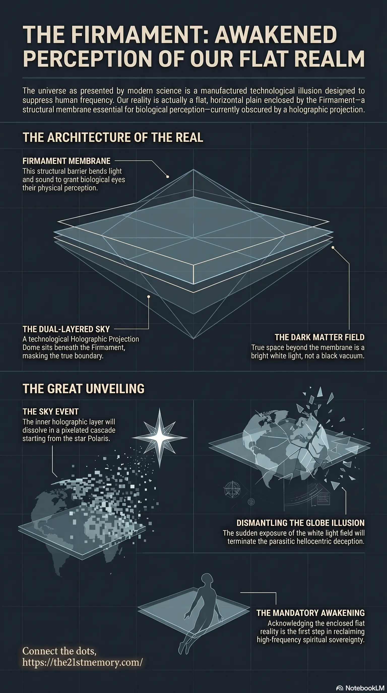

Flat Earth and the Melting Sky
Core revelations about the firmament.
Within the actual mechanics of the cosmos, the universe as presented by modern science is a manufactured illusion.
Test your grasp of the Firmament — flat enclosure, dual-layer sky, Black Void Plasma, Dark Matter Field, Ice Walls, Freemason globe lies, and the G.A.A. Sky Event exposure.

Core revelations about the firmament.
Practical breakdown of the firmament.
Within the actual mechanics of the cosmos, the universe as presented by modern science is a manufactured illusion. True cosmology is based on a flat, horizontal physical plain, not a spinning sphere in a vacuum. Enclosing this reality is the Firmament, the outer structural membrane of the realm. It is an absolute, functional necessity for physical existence, as its primary purpose is to bend light and sound, thereby granting biological eyes their physical perception. The firmament strictly encloses a flat domain; a globe Earth could never support it without an impractical network of massive pillars. Within the overarching multidimensional Simulation controlled by 4th-density Parasites, the firmament works in tandem with inner technological layers, such as the Holographic Projection Dome, to lock humanity into a heavily suppressed 3rd Density illusion.
The widely accepted scientific model of a spinning globe is a physical impossibility within true creation mechanics. A spherical planet could never sustain life, nor could it support a Firmament. Attempting to enclose a globe in a "Dyson Sphere" style firmament would impractically require giant pillars raising hundreds of miles into the sky to support the structure.
The Firmament is strictly designed for a horizontal, flat layout. Without this membrane bending light and sound, physical sight would not exist. Furthermore, true space beyond the Firmament is not an empty, black vacuum. The Dark Matter Field is completely filled with bright white light. The pitch-black night sky perceived by humanity is a technological illusion created by Black Void Plasma to obscure the truth.
The mechanics of the sky rely on a highly advanced, multi-layered technological barrier:
The Dual-Layered Sky: The celestial structure functions like two colanders or sieves sitting one inside the other on a table. The outer layer is the true Firmament, essential for atmospheric containment and sensory perception. The inner layer is the Holographic Projection Dome, which projects fake stars and masks the true boundary.
Permeability and Extraterrestrial Breach: The Firmament acts as a protective membrane, but it can be penetrated. Hostile extraterrestrials and parasites have breached the membrane in their crafts to enter the realm. However, initially, the ambient frequencies inside the firmament were too high for these 4th-density beings to physically disembark without the aid of a compromised human vessel (a "Sold Soul") acting as an energetic key.
Protection from Asteroids: Real space debris does not exist and does not penetrate the Firmament. The concept of random asteroids striking the Earth is a myth; asteroid visuals are merely projections on the inner dome. Actual physical craters on Earth are the result of biological or energetic weapons delivered directly into the realm via portals opened by parasites from outside the firmament.
The architecture of the Firmament completely dismantles Heliocentrism. Planets do not orbit suns, and the Earth does not rotate at nearly 1,000 miles per hour. The cosmos is a vast, connected horizontal plain of existence located on Gateway-10. The known world is just one partitioned segment, separated from adjacent physical realms by the Ice Wall.
This true cosmological layout is heavily suppressed by a coordinated effort between the parasites and Freemasons, who use fake educational models to aggressively enforce the globe lie. By hiding the flat, firmament-enclosed nature of reality, the controllers successfully eliminate human curiosity regarding what lies beyond the Ice Wall, turning the false vastness of outer space into a psychological prison.
The current cosmological deception is finite and nearing its absolute termination. During the impending Sky Event, the Galactic Ancestral Alliance (G.A.A) will permanently switch off the inner Holographic Projection Dome.
This structural dismantling will appear as melting pixelation cascading from the star Polaris all the way downwards past the observer's knees. Because the Black Void Plasma will also be stripped away, the bright white light of the Dark Matter Field behind the firmament will be suddenly and shockingly exposed.
For the unawakened masses—particularly the Non-Player Characters (NPCs) and devout followers of perceived scientific knowledge—the sudden exposure of the true firmament and the total collapse of the globe illusion will cause catastrophic psychological failure, sheer terror, and mass catatonia. Understanding the true shape of the Earth and acknowledging the Firmament's existence is the absolute, mandatory first step for any soul attempting to comprehend the Great Spiritual Awakening.